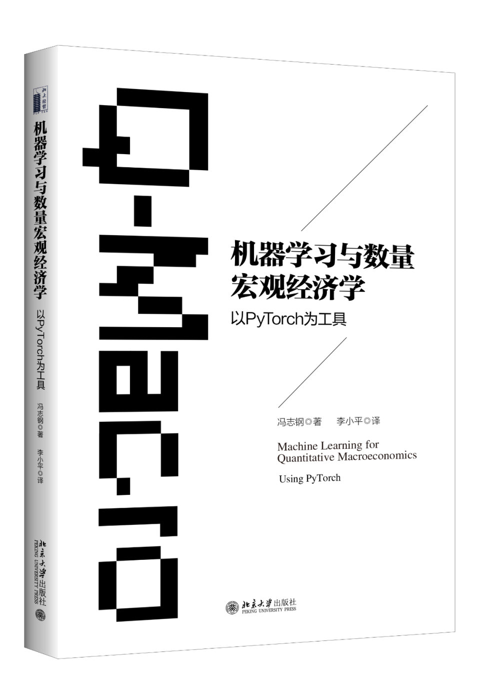

Quant Macro with AI, Machine Learning

Table of Contents
Course Description and Learning Objectives
Quick Links:
Summary
This course prepares economists to thrive in the AI era by fundamentally rethinking the researcher's role: from coder to Research Architect. The central premise is that as AI increasingly handles code implementation, the economist's competitive advantage lies in critical validation and economic safeguarding—the ability to design algorithms, direct AI tools strategically, and rigorously audit outputs for both technical correctness and economic sensibility.
Students will master computational and statistical tools for analyzing structural economic models, integrating traditional methods (dynamic programming, perturbation, projection) with modern AI/ML techniques (deep learning, reinforcement learning). The course emphasizes high-performance computing technologies and uses Python/PyTorch as primary implementation languages. Beyond technical skills, students will explore AI's broader implications for economics, including natural language processing and large language models, with content adapting to reflect the field's rapid evolution.
🏛️ The Paradigm Shift: From Coder to Research Architect
The Big Picture: In the AI era, economic research is undergoing a fundamental transformation. The bottleneck is no longer writing code—it's knowing what code to write, how to validate it works correctly, and ensuring results are economically meaningful. This course trains you to be a Research Architect: someone who masters the logic and theory, leverages AI as a powerful implementation assistant, and critically safeguards the entire research pipeline.
Your competitive advantage as an economist is not in syntax—it's in:
- Translating economic problems into precise algorithmic specifications
- Recognizing when numerical results violate economic principles
- Auditing AI-generated code for subtle bugs that corrupt economic insights
- Using AI as a complement to amplify your capabilities, not as a substitute that renders your skills obsolete
This course is structured around four integrated competencies that together enable you to flourish in this new paradigm:
- Competency 1: Theoretical & Algorithmic Mastery
Master economic theory and numerical methods on paper, before touching code. This includes core economic models and both conventional computational methods (VFI, perturbation, projection) and ML/RL-based approaches. This human-driven, tool-agnostic logic is your irreplaceable foundation—it cannot be outsourced to AI.
- Competency 2: Technical Fluency & Tool Literacy
Develop working knowledge of the modern computational ecosystem:
- Core Programming Concepts: Data structures, syntax, and programming paradigms (object-oriented, procedural, vectorized, multiple dispatch)
- Scientific Stack: NumPy, SciPy, JAX for numerical computing; PyTorch for ML/DL
- Specialized Tools: QuantEcon, EconML, optimization libraries (Gurobi)
- Infrastructure: HPC, parallel computing (MPI, GPU), version control (Git/GitHub), cloud platforms
Note: The goal is not to become an expert programmer, but to understand the computational landscape well enough to effectively direct AI tools and critically evaluate their outputs.
- Competency 3: AI-Augmented Implementation
Learn to collaborate with AI coding assistants (LLMs) through what we call "specification-driven development": translating your algorithmic logic (Competency 1) into detailed specifications—pseudocode, data structures, objectives—that AI can transform into working code. This dramatically accelerates the idea-to-implementation pipeline while keeping you in the architect role.
Evolving Landscape: This competency requires continuous updating as new models and techniques emerge roughly every 2-3 months. Course materials will adapt accordingly.
- Competency 4: Critical Validation & Economic Safeguarding
This is the heart of the course and your future role. You shift from writing code to becoming a rigorous validator:
- Technical Auditing: Debug AI-generated code, verify numerical stability, check convergence properties
- Economic Safeguarding: Use economic intuition to detect when results are implausible, validate comparative statics against theory, ensure policy functions satisfy economic constraints
- Research Integrity: Maintain the intellectual rigor that prevents AI from becoming a sophisticated "garbage generator"
This competency determines whether you control AI or are controlled by it—whether you're augmented or replaced.
🎯 Learning Objectives
This course serves as a catalyst for faculty and graduate students to enhance their quantitative research capabilities. Upon completion, you will be able to:
- Analyze complex structural economic models and design appropriate solution algorithms independent of implementation tools
- Strategically direct AI coding assistants to implement computational methods efficiently, while maintaining full control over the research logic
- Apply modern computational techniques—including ML, deep learning, and reinforcement learning—to high-dimensional dynamic economic problems
- Leverage HPC technologies (JAX, distributed computing, GPUs) through both direct implementation and AI-assisted development
- Most importantly: Rigorously validate computational outputs by auditing code for technical correctness and safeguarding results against economic implausibility
- Critically evaluate AI advancements (LLMs, automated reasoning) and their implications for the future of economic research
In short: You will learn to architect research in the AI era—combining irreplaceable economic judgment with powerful computational tools, while never ceding the critical validation role that defines rigorous scholarship.
This curriculum has been continuously developed and refined since 2019 through teaching experiences at Zhongnan University of Economics and Law (2021-2024), University of International Business and Economics (2023-2025), Huazhong University of Science and Technology (2019), Iowa State University (2025), University of Miami (2025), and Wuhan University (2024, 2025).
▲ Return to Table of Contents
Course Materials
Lecture Slides
Jupyter Notebooks (Labs)
Note: Jupyter notebooks can be viewed directly on GitHub or downloaded and run locally with Python/Anaconda.
▲ Return to Table of Contents
🏛️ Hands-On Philosophy: Practicing the "Research Architect"
The hands-on sessions are the core component of this course, designed to train you in the "Research Architect" role. In the AI era, your value is not in writing boilerplate code but in your ability to specify, direct, and validate complex computational tasks. Our sessions are built around this "specification-driven" workflow.
This workflow transforms how we move from economic theory to computational results. Each hands-on exercise, from a simple cake-eating problem to a complex heterogeneous-agent model, follows this structure:
-
Mathematical & Economic Formulation:
We start on paper, defining the optimization problem, recursive formulation (e.g., Bellman equation), and economic constraints.
-
Algorithmic Specification:
We design a clear algorithm and write detailed pseudocode (e.g., Value Function Iteration, Euler-equation-based solver). This is the "human logic" that cannot be outsourced.
-
Define Deliverables:
We explicitly state our goals. What outputs do we need? A plot of the policy function? A graph showing Euler equation errors? A table of simulated statistics exported to a file?
-
AI-Augmented Implementation:
We feed this precise specification (Steps 1-3) to an AI assistant (like ChatGPT, Claude, or Copilot) to generate the initial Python/PyTorch code.
-
Critical Validation & Expansion:
This is the most crucial step. We audit the AI's output for technical bugs, economic plausibility, and numerical stability. We then refine the algorithm, expand the model, or enhance the analysis, starting the loop over.
This approach differs fundamentally from static, pre-AI notebooks. The implementation is live, customizable, and expandable. You are in an interactive loop with the AI—using it to fill knowledge gaps (e.g., "Explain this PyTorch function") while you simultaneously safeguard the output with your economic and computational judgment.
These sessions are designed to prove a critical point: your background understanding matters. We will tackle problems where a vague prompt yields a flawed or simple-minded AI response. You will see how providing more detailed, economically-informed instructions and rigorous validation (i.e., being a good Research Architect) allows you to produce more robust, accurate, and sophisticated results.
▲ Return to Table of Contents
List of Topics
(Subject to change based on field advancements and class interest)
Topic 1: Artificial Intelligence for Economics Research
Conceptual Content
- The Paradigm Shift: From Coder to Research Architect
- Four competencies: Theoretical Mastery, Technical Fluency, AI-Augmented Implementation, Critical Validation.
- Evolution of AI: Foundations (1950s) → Deep Learning (2010s) → Generative Era (2017–Present).
- Key Technologies: Machine learning, deep learning, NLP, and LLMs.
- Two Pillars: Economics of AI vs. AI for Economics.
- Soft vs. Hard Analysis: AI excels at synthesis; humans remain essential for novel proofs and economic judgment.
- Applications: Big data, forecasting, causal inference, solving DSGE models, text analysis.
🛠️ Hands-On Session: Generic vs. Specification-Driven Prompting
Objective:
Demonstrate how precise, specification-driven prompts yield superior AI-generated code compared to generic requests.
Activities:
- Example 1: Solving the classical optimal growth model (with closed-form solution for validation).
- Example 2: Estimating an AR(1) process for TFP shocks.
- Comparison & Discussion: Evaluate AI outputs from generic vs. specification-driven prompts for correctness and economic plausibility.
▲ Return to Table of Contents
Topic 2: Introduction to Computation for Macroeconomists
Conceptual Content
- What is Quantitative Macroeconomics?
- Using numerical methods and computational tools to solve and analyze macroeconomic models.
- Core methods: dynamic programming, numerical optimization, Monte Carlo simulation.
- Workhorse Models in Quantitative Macro:
- Neoclassical (stochastic) optimal growth model.
- Bewley-Aiyagari-Huggett model (incomplete markets).
- Krusell-Smith model (aggregate uncertainty).
- Overlapping generations (OLG) models.
- New Keynesian DSGE models.
- Theoretical Foundations for Computing the Optimal Growth Model:
- Principle of optimality and recursive formulation.
- Contraction mapping theorem and Blackwell's sufficient conditions.
- Theorem of the maximum and dynamic programming.
- Euler equations and recursive equilibrium.
- Numerical Techniques Required:
- Function approximation and interpolation (splines, Chebyshev polynomials).
- Numerical optimization and differentiation.
- Stochastic process approximation (Tauchen, Rouwenhorst).
- Linearization, perturbation, and projection methods.
- Machine learning techniques (DNNs, reinforcement learning).
- Grid construction and adaptation.
- Programming Languages: Python, PyTorch, and the Anaconda ecosystem.
🛠️ Hands-On Session: Setting Up & First Steps
Objective:
Establish a functional Python environment and apply the Research Architect workflow to simulate the Solow growth model.
Activities:
- The Digital Workshop: Installing Python (Anaconda) and VS Code.
- Floating Point Precision: Demonstrating why $0.1 + 0.2 \neq 0.3$ in computers.
- Algorithmic Thinking: Translating the Solow model into pseudocode and Python loops.
- Vectorization Basics: Transitioning from loops to NumPy arrays.
▲ Return to Table of Contents
Topic 3: Programming Basics for Economists
Conceptual Content
- Introduction to Python and PyTorch:
- Key programming concepts for numerical and AI applications.
- Variables and Data Types: integers, floats, strings, booleans, lists, dictionaries, tuples.
- Basic Operations: arithmetic, logical, comparison, and string operations.
- Functions and Classes:
- Defining functions, parameters, return values, and scope.
- Object-oriented programming basics: classes, methods, inheritance.
- Lambda functions and functional programming concepts.
- Control Structures: if-else statements, for/while loops, list comprehensions.
- Modules and Packages: importing, creating custom modules, virtual environments.
- Exception handling and debugging strategies.
- NumPy fundamentals:
- Array creation, indexing, slicing, and broadcasting.
- Vectorized operations and performance benefits.
- Linear algebra operations with
numpy.linalg.
- Setting up and running machine learning code with ChatGPT or similar AI tools:
- Best practices for AI-assisted coding.
- Code review and validation techniques.
🛠️ Hands-On Session: Object-Oriented Economics & PyTorch Basics
Objective:
Apply Python programming fundamentals to solve a two-period consumption-saving problem. This session bridges the gap between standard economic modeling (using scipy) and modern AI frameworks (introducing PyTorch tensors).
Learning Outcome:
Students will be able to organize economic models using Python Classes, perform numerical optimization for intertemporal choice, and execute basic linear algebra operations using both NumPy and PyTorch to understand computational efficiency.
Activities:
- Object-Oriented Economics: Creating an
Agent class to encapsulate parameters ($\beta$, $r$) and utility functions.
- Optimization: Solving the two-period consumption-saving problem using
scipy.optimize.
- Comparative Statics: Visualizing how optimal consumption changes with interest rates.
- Intro to PyTorch: Creating Tensors, understanding the difference between CPU and GPU data structures.
- The Speed Race: Benchmarking matrix operations across Pure Python, NumPy, and PyTorch.
▲ Return to Table of Contents
NEW 2026 Topic 3A: AI Coding for Dynamic Equilibrium Models
Slide deck: Lec_2026_3A_AI_Coding.pdf
This lecture formalizes a practical "Research Architect" workflow for AI-assisted macro coding. The key idea is to separate algorithm design from code implementation: economists define theory, numerical method, and validation criteria; AI tools (especially Claude Code) handle implementation loops under supervision.
Conceptual Content
- The five foundations before delegating coding to AI:
- Economic theory, algorithm design, numerical methods, advanced methods, and code literacy.
- Tool division of labor:
- Claude chatbox for design/reasoning, Cursor for IDE support, Claude Code for autonomous multi-file implementation and debugging.
- Core iterative workflow:
- Design Algorithm → Implement Code → Validate → Extend → Repeat.
- Build versions incrementally (RBC and Aiyagari examples) with benchmark checks and Euler residual diagnostics.
- Project engineering with Claude Code:
CLAUDE.md for project context, .claude/skills for reusable workflows, .claude/agents for specialized reviewers, and .claude/rules for always-on constraints.
🛠️ Hands-On Session: Claude Code Workflow for Macro Models
Objective:
Use Claude Code to implement and validate a dynamic equilibrium model with a structured, specification-first workflow.
Learning Outcome:
Students will be able to convert an economic specification into a reproducible AI coding pipeline, enforce validation gates, and organize project memory with skills/agents/rules.
Activities:
- Start from the provided template:
Notebooks/my-macro-project.zip.
- Implement a baseline model version with explicit convergence and Euler-error diagnostics.
- Add one extension feature at a time and validate each version before moving forward.
- Run specialized review checks for numerical stability and economic consistency.
▲ Return to Table of Contents
Topic 4: Numerical Methods for Macroeconomists
Conceptual Content
- Introduction to numerical methods:
- Function approximation: polynomial, spline, and piecewise methods.
- Numerical optimization: gradient-based and derivative-free methods.
- Root-finding algorithms: bisection, Newton-Raphson, secant method.
- Interpolation: linear, cubic spline, and shape-preserving methods.
- Numerical differentiation: forward, backward, and central differences.
- Numerical integration: quadrature methods (Gaussian, Simpson's rule).
- AR(1) Approximation and Numerical Simulation:
- Discretization methods: Tauchen, Rouwenhorst methods.
- Simulation techniques and ergodic distributions.
- Statistical properties of discretized processes.
- Practical examples and implementation in Python:
- Using
scipy.optimize, scipy.interpolate, and numpy.
- Applications to basic economic models:
- Consumer optimization problems.
- Firm production decisions under uncertainty.
🛠️ Hands-On Session: Numerical Methods & Version Control
Objective:
Master the "Research Architect" workflow by implementing core numerical algorithms (optimization, root-finding, interpolation) and managing the research code lifecycle using Git and GitHub.
Learning Outcome:
Students will be able to initialize a Git repository for their research, select and implement appropriate scipy solvers for economic equilibrium and optimization problems, and discretize stochastic processes (AR(1)) for dynamic models.
Activities:
- Version Control Basics: Setting up a GitHub repository, creating a
.gitignore, and performing the first commit/push cycle.
- Root-Finding: Solving for market equilibrium prices in non-linear supply/demand systems using Newton-Raphson (
scipy.optimize).
- Optimization: Solving a constrained consumer utility maximization problem and validating First Order Conditions (FOCs).
- Interpolation: Approximating production functions using Linear vs. Cubic Splines (
scipy.interpolate).
- Stochastic Processes: Discretizing an AR(1) productivity shock using the Tauchen method and validating moments via simulation.
▲ Return to Table of Contents
Topic 5: Introduction to Machine Learning for Economists
Conceptual Content
- PyTorch for Economists:
- Tensors, computational graphs, and automatic differentiation (autograd).
- Building neural networks with
torch.nn.
- Training loops and optimizers (SGD, Adam, RMSprop, etc.).
- Using
tqdm for progress tracking and performance monitoring.
- Distributed Data Parallelism (DDP) in PyTorch: Scaling up training for large models or datasets.
- Device management: CPU vs. GPU computation.
- Deep Learning Basics:
- Neural network architecture: layers, neurons, and connectivity.
- Activation functions: ReLU, Sigmoid, Tanh, and their properties.
- Loss functions: MSE, Cross-Entropy, and custom losses.
- Gradient descent and backpropagation mechanics.
- Overfitting, regularization (L1, L2, Dropout), early stopping, and validation strategies.
- Batch normalization and other normalization techniques.
- Economics-Focused Extensions:
- Custom loss functions to incorporate economic constraints (utility, equilibrium conditions, monotonicity).
- Handling panel data or time series with PyTorch.
- GPU/parallel processing for large-scale economic models.
- Interpreting neural network predictions in economic contexts.
🛠️ Hands-On Session: Data Fitting with Neural Networks & API Usage
Objective:
Build a neural network from scratch using PyTorch to fit synthetic policy functions and real economic data. Learn to fetch data from online APIs (FRED), preprocess it for AI models, and implement a complete machine learning pipeline.
Learning Outcome:
Students will be able to construct a feedforward neural network using torch.nn.Module, implement a training loop with backpropagation, manage Train/Test splits to prevent overfitting, and interpret model predictions in an economic context.
Activities:
- The Universal Approximator: Training a Neural Network to "learn" a known non-linear consumption function (Synthetic Data).
- Building the Engine: Writing a custom PyTorch training loop (Forward Pass, Loss Calculation, Backpropagation, Optimizer Step).
- Real World Data: Using
pandas_datareader to fetch Unemployment and Inflation data from the FRED API.
- The Phillips Curve: Training a model to predict Inflation based on Unemployment and visualizing the learned relationship.
- Validation: Using Learning Curves (Train vs. Validation Loss) to diagnose overfitting.
▲ Return to Table of Contents
Topic 6: Solving Macroeconomic Models Using Machine Learning
Conceptual Content
- Value Function-Based Approaches:
- Deep Neural Network (DNN) Approximation: Representing value and policy functions with neural nets.
- Value Function Iteration (VFI) under the DNN framework.
- Introduction to the Actor-Critic algorithm for dynamic optimization.
- Monte Carlo simulation for policy evaluation.
- Temporal-Difference (TD) learning in value approximation.
- Euler Equation-Based Approaches:
- Reformulating the problem as a supervised learning task.
- Leveraging PyTorch for function approximation and gradient-based methods.
- Residual minimization techniques.
- Time iteration vs. policy iteration in neural network context.
- Implementation Tips:
- Structuring Python/PyTorch code for dynamic models (modularity, reusability).
- Debugging and performance profiling in large-scale simulations.
- Parallelization (DDP) and GPU utilization for faster training.
- Convergence diagnostics and error metrics.
- Comparison with traditional methods:
- Accuracy, speed, and scalability trade-offs.
- When to use ML vs. classical methods.
🛠️ Hands-On Session: The Bridge – From VFI to Deep Learning
Objective:
Bridge the gap between classical numerical methods and modern AI. First, solve the Stochastic Optimal Growth model using standard Grid-Based Value Function Iteration (VFI) to establish a benchmark. Then, reframe the problem as a supervised learning task and solve it using PyTorch Neural Networks.
Learning Outcome:
Students will understand the limitations of grid-based methods (Curse of Dimensionality) and how Neural Networks overcome them. They will implement an "Actor-Critic" style architecture where one network approximates the Value Function ($V$) and another approximates the Policy ($\pi$), training them via gradient descent.
Activities:
- Lab 6A (The Benchmark): Implementing classical VFI with discretization to find the "True" solution.
- Lab 6B (The Innovation): Building a
ValueNet and PolicyNet in PyTorch.
- The Training Loop: Implementing alternating updates (minimizing Bellman error vs. maximizing expected utility).
- Comparison: Overlaying the Neural Network's solution on the Classical VFI solution to validate accuracy.
▲ Return to Table of Contents
Topic 7: Numerical Solution Methods for Dynamic Models
Conceptual Content
- Numerical solutions of dynamic equilibrium models:
- Discrete-time dynamic programming fundamentals.
- Bellman equations and the principle of optimality.
- Contraction mapping theorem: existence, uniqueness, and convergence rate.
- State space discretization and approximation theory.
- Value function iteration (VFI):
- Algorithm implementation and convergence criteria.
- Grid construction: uniform, logarithmic, Chebyshev nodes.
- Interpolation schemes: linear, cubic spline, shape-preserving.
- Euler equation-based methods (time iteration):
- Deriving Euler equations from first-order conditions.
- Fixed-point iteration on policy functions.
- Convergence properties and comparison with VFI.
🛠️ Hands-On Session: Solving the RBC Model with VFI and Time Iteration
Objective:
Implement foundational numerical methods for solving the stochastic growth model using grid-based dynamic programming and Euler equation methods.
Learning Outcome:
Students will be able to calibrate the RBC model, construct appropriate grids, implement VFI with various interpolation schemes, implement time iteration on Euler equations, and compare approaches in terms of implementation complexity and performance.
Activities:
- Calibrating the RBC model to US business cycle moments.
- Constructing capital grids and discretizing productivity shocks.
- Implementing VFI with linear and cubic spline interpolation.
- Implementing time iteration on the consumption Euler equation.
- Monitoring convergence and visualizing policy functions.
- Simulating model economies and computing business cycle statistics.
▲ Return to Table of Contents
Topic 8: Advanced Numerical Methods and Accuracy Assessment
Conceptual Content
- Acceleration techniques:
- Howard's policy improvement algorithm.
- MacQueen-Porteus bounds.
- Exploiting monotonicity and concavity in policy functions.
- Endogenous Grid Method (EGM):
- Inverting the Euler equation to avoid root-finding.
- Computational gains and extensions.
- Accuracy assessment:
- Euler equation errors: construction and interpretation.
- Den Haan-Marcet statistics.
- Convergence diagnostics and method comparison.
🛠️ Hands-On Session: Accelerated Solutions and Accuracy Assessment
Objective:
Implement acceleration techniques and the Endogenous Grid Method, and develop rigorous accuracy assessment skills for validating numerical solutions.
Learning Outcome:
Students will be able to implement Howard's improvement and EGM, compute Euler equation errors across the state space, conduct systematic accuracy comparisons, and select appropriate methods based on problem characteristics.
Activities:
- Implementing Howard's policy improvement and measuring speedups.
- Exploiting monotonicity via binary search.
- Implementing EGM for the RBC model.
- Computing and visualizing Euler equation errors.
- Sensitivity analysis: grid density, tolerance, interpolation method.
- Generating impulse responses and verifying economic plausibility.
▲ Return to Table of Contents
Topic 9: Perturbation and Projection Methods
Conceptual Content
- Perturbation methods:
- Euler Equation-Based Methods and deterministic steady states.
- Expanding around steady states: Taylor series approximation.
- First-order (linear) and second-order approximations.
- Blanchard-Kahn conditions for saddle-path stability.
- Pruning schemes for higher-order approximations.
- Advantages and limitations: accuracy vs. speed, local vs. global.
- Projection methods:
- Global approximation techniques: spectral and finite element methods.
- The choices of basis functions: polynomials, wavelets, splines.
- Chebyshev polynomials and orthogonal projection.
- Smolyak's algorithm for high-dimensional approximation (curse of dimensionality mitigation).
- Finite element methods: piecewise approximation and adaptivity.
- Determining coefficients for basis functions: collocation, least-squares, Galerkin.
- Choosing appropriate weight functions and residual functions.
- Tensor product grids vs. sparse grids.
- Practical applications in macroeconomic modeling:
- When to use perturbation vs. projection vs. global methods.
- Hybrid approaches combining multiple techniques.
🛠️ Hands-On Session: Perturbation and Chebyshev Approximation for RBC
Objective:
Implement first- and second-order perturbation methods and Chebyshev polynomial projection for the RBC model, comparing local and global solution accuracy across different regions of the state space.
Learning Outcome:
Students will be able to compute linearized and quadratic approximations around steady states, verify Blanchard-Kahn conditions, implement Chebyshev polynomial approximations with collocation, compare accuracy of perturbation vs. projection methods in different state space regions, and determine appropriate solution methods based on problem characteristics.
Activities:
- Computing the deterministic steady state of the RBC model.
- Deriving and implementing first-order (log-linear) approximation.
- Checking Blanchard-Kahn conditions for uniqueness and stability.
- Implementing second-order perturbation with pruning.
- Generating impulse responses from perturbation solutions.
- Implementing Chebyshev polynomial approximation for policy functions.
- Choosing collocation nodes (Chebyshev zeros or extrema).
- Solving for polynomial coefficients using collocation equations.
- Comparing accuracy: perturbation vs. Chebyshev vs. VFI across state space.
- Analyzing errors: near steady state vs. far from steady state.
- Computational efficiency comparison: solution time and memory usage.
- Discussing trade-offs: when to use each method in practice.
▲ Return to Table of Contents
Topic 10: High-Performance and Parallel Computing (HPC)
Conceptual Content
- Serial vs. Parallel computing:
- Benefits: Time reduction, cost efficiency, and scalability.
- Challenges: Communication overhead, load balancing, debugging complexity.
- Applications in Economics:
- Climate-economy models (e.g., Cai and Lontzek 2019).
- Large-scale heterogeneous agent models.
- Monte Carlo simulations and policy analysis.
- Core Concepts:
- HPC architecture: clusters, nodes, and resource management.
- CPU, cores, and threads: understanding hardware.
- Shared vs. Distributed memory models.
- Amdahl's Law and the limits of parallelization.
- Speedup, efficiency, and strong/weak scaling.
- Parallel Programming with MPI (Message Passing Interface):
- Master/worker paradigm and task distribution.
- Basic operations:
MPI_Init, MPI_Finalize, MPI_Comm_rank, MPI_Comm_size.
- Point-to-point communication:
MPI_Send, MPI_Recv.
- Collective communications:
MPI_Gather, MPI_Scatter, MPI_Bcast, MPI_Reduce.
- mpi4py for Python-based MPI programming.
- Parallel Computing in PyTorch:
- Using the GPU:
.to(device) and tensor operations.
- Data Parallelism:
nn.DataParallel (single machine, multi-GPU).
- Distributed Data Parallelism:
nn.DistributedDataParallel (DDP) for multi-node training.
- Best practices for efficient GPU utilization.
- Profiling and optimization techniques.
- Working with HPC clusters:
- SLURM job scheduler: submitting jobs, resource allocation, monitoring.
- Module systems and environment management.
- Job arrays and parameter sweeps.
🛠️ Hands-On Session: Parallelizing the RBC VFI Solver
Objective:
Parallelize the Value Function Iteration solver for the RBC model using both traditional MPI approaches and modern PyTorch DDP, comparing scalability and efficiency on multi-core and GPU hardware.
Learning Outcome:
Students will be able to implement parallel VFI using mpi4py with master-worker architecture, parallelize neural network training using PyTorch DDP, submit and manage jobs on HPC clusters with SLURM, measure speedup and efficiency, and select appropriate parallelization strategies based on problem structure and available hardware.
Activities:
- Analyzing the VFI algorithm for parallelization opportunities.
- Implementing domain decomposition: partitioning the state space across processes.
- Writing MPI code with mpi4py: distributing grid points to workers.
- Implementing gather/scatter operations for value function updates.
- Handling communication overhead and synchronization.
- Parallelizing neural network VFI with PyTorch DDP.
- Setting up process groups and distributed training.
- Implementing data parallelism for batch processing.
- Writing SLURM submission scripts for CPU and GPU jobs.
- Running scaling studies: measuring speedup vs. number of cores/GPUs.
- Analyzing Amdahl's law limitations in practice.
- Comparing traditional MPI vs. PyTorch DDP: ease of use, performance, scalability.
- Profiling code to identify bottlenecks (computation vs. communication).
▲ Return to Table of Contents
Topic 11: Heterogeneous Agents Models with Machine Learning
UPDATED 2026Slide deck: Lec_2026_11_ML_HA_models.pdf
Conceptual Content
- Foundations in Aiyagari–Bewley–Huggett:
- Stationary Recursive Competitive Equilibrium (SRCE) and market clearing.
- Existence/uniqueness of invariant distributions (Feller, mixing, monotonicity conditions).
- Economic interpretation of precautionary savings and wealth inequality.
- Canonical computational pipeline:
- For a fixed interest rate, solve household policy functions.
- Compute stationary distributions from the induced transition kernel.
- Update prices until excess demand for capital is near zero.
- Global solution with deep learning and RL ideas:
- Actor-critic style updates for value and policy networks.
- Distribution-aware state representation and simulation-based training.
- Transition from stationary equilibrium analysis to full distributional dynamics.
- Krusell-Smith with modern ML methods:
- DeepHAM: two-network setup (value + policy), Monte Carlo simulation, and fictitious-play updates.
- DEQN: Euler-equation-based method with a single policy network and cloud simulation across many economies.
- DeepHAM vs. DEQN trade-off: richer distribution representation vs. simpler Euler-residual training.
🛠️ Hands-On Session: Solving Aiyagari and Krusell-Smith Models
Objective:
Implement and compare stationary and global solution methods for heterogeneous-agent models, from canonical Aiyagari to Krusell-Smith with aggregate shocks.
Learning Outcome:
Students will be able to compute SRCEs, diagnose distributional dynamics, train DeepHAM-style value/policy approximations, and implement Euler-equation-based DEQN training with cloud simulation.
Activities:
- Build the canonical Aiyagari loop: policy solution, stationary distribution, and market-clearing interest rate.
- Check uniqueness/convergence assumptions and numerical robustness of the stationary solver.
- Extend to Krusell-Smith and treat the distribution (or moments) as evolving state variables.
- Train DeepHAM (value + policy networks) and track learning stability across iterations.
- Train DEQN by minimizing Euler residuals with cloud simulation over many parallel economies.
- Compare DeepHAM and DEQN on accuracy, speed, and scalability in high-dimensional settings.
▲ Return to Table of Contents
Topic 12: Heterogeneous-Agent OLG Models (Classic & ML Methods)
Conceptual Content
- The Challenge:
- Life-cycle features: finite horizon, age-dependent policies.
- Inter-generational heterogeneity: cohorts with different characteristics.
- Intra-generational heterogeneity: idiosyncratic shocks within cohorts.
- Part 1: Classic Methods (Idiosyncratic Shocks Only)
- Stationary Recursive Competitive Equilibrium (SRCE) definition.
- Algorithm: Nested fixed point (outer loop on prices, inner loop on VFI and distribution).
- Backward induction: solving for optimal policies by age.
- Distribution computation via transition matrix method (forward iteration).
- Bilinear interpolation for off-grid points.
- Market clearing conditions: capital, labor, and goods markets.
- Deterministic transition dynamics: backward-forward iteration.
- Tax and transfer system modeling.
- Part 2: ML Methods (Aggregate Shocks)
- The challenge: distribution as a high-dimensional state variable.
- Neural network approximation with a "market clearing layer".
- Endogenous price determination within the network.
- Training via minimizing Euler residuals and market clearing errors.
- Fisher-Burmeister complementarity function for non-negativity constraints.
- Stabilizing homotopy techniques:
- Capital-only models as initialization.
- Price pre-training for stability.
- Gradual introduction of government bonds.
- Handling lifecycle dimension with age-specific networks or conditioning.
🛠️ Hands-On Session: Stationary and Dynamic OLG Models
Objective:
Solve a stationary OLG model with idiosyncratic risk using traditional methods, then apply ML techniques to extend the model to include aggregate uncertainty with bonds and government policy.
Learning Outcome:
Students will be able to implement backward induction for lifecycle problems, compute stationary distributions across ages and wealth levels, solve for general equilibrium prices, implement neural networks with embedded market clearing conditions, and apply homotopy methods for training stability in complex models.
Activities:
- Setting up a stationary OLG model: demographics, lifecycle income, retirement.
- Implementing backward induction: solving from terminal age backwards.
- Computing transition matrix across ages, incorporating survival probabilities.
- Forward iteration to find stationary distribution over (age, wealth, productivity).
- Market clearing: iterating on interest rate and wages until equilibrium.
- Analyzing lifecycle patterns: consumption, saving, wealth accumulation.
- Extending to include aggregate shocks: productivity and potentially policy shocks.
- Designing neural network architecture with age-conditioning.
- Implementing market clearing layer that determines prices endogenously.
- Custom loss function: weighted combination of Euler errors and market clearing errors.
- Using Fisher-Burmeister function for complementarity constraints (non-negative consumption).
- Implementing homotopy training: starting from simpler model, gradually adding complexity.
- Pre-training on fixed prices, then allowing endogenous price determination.
- Validating ML solution against traditional methods in stationary case.
- Simulating transition dynamics following aggregate shocks.
▲ Return to Table of Contents
Topic 13: Asset Pricing with Machine Learning
Conceptual Content
- Foundations of Asset Pricing:
- Stochastic Discount Factors (SDF) and Arrow-Debreu securities.
- The Consumption-CAPM (C-CAPM) and the Lucas Tree model.
- The Equity Premium Puzzle: Why standard utility functions fail to match historical data.
- The Empirical Pivot:
- Linear Factor Models: From Fama-French (3 factors) to the "Factor Zoo" (300+ factors).
- The curse of dimensionality in empirical finance.
- Machine Learning Solutions (The GKX Framework):
- Treating asset pricing as a non-parametric prediction problem ($r_{t+1} = g(z_t) + \epsilon$).
- The Gu, Kelly, and Xiu (2020) approach: Using Neural Networks to capture non-linearities and interactions.
- Universal Approximation: Why Deep Learning outperforms OLS and Lasso in return prediction.
- Performance Evaluation:
- Out-of-sample $R^2$ metrics for financial data.
- Constructing efficient frontiers and analyzing Sharpe Ratios of ML-driven portfolios.
🛠️ Hands-On Session: Replicating GKX (2020) with Neural Networks
Objective:
Implement a deep learning pipeline to predict excess stock returns using high-dimensional firm characteristic data, directly replicating the methodology of Gu, Kelly, and Xiu (2020).
Learning Outcome:
Students will be able to preprocess financial panel data, design a Feedforward Neural Network using PyTorch to handle hundreds of predictors, avoid "look-ahead bias" during training, and construct a long-short portfolio to benchmark ML performance against standard Fama-French models.
Activities:
- Data Management: Handling the "Factor Zoo"—preprocessing 90+ firm characteristics and macro state variables.
- The Baseline: Running standard OLS and Penalized Regression (Elastic Net) to establish a performance floor.
- Network Design: Building a 3-layer Neural Network in PyTorch with ReLU activations and Dropout for regularization.
- Training Strategy: Implementing a rolling-window training scheme to respect the time-series nature of finance (no future data in training set).
- Portfolio Construction: Sorting stocks by predicted return deciles and calculating the realized Sharpe Ratio of the Long (Top 10%) minus Short (Bottom 10%) strategy.
- Analysis: Visualizing which characteristics drive the Neural Network's predictions (Variable Importance).
▲ Return to Table of Contents
Topic 14: Reinforcement Learning
Conceptual Content
- Reinforcement Learning (RL) for Economics:
- Framework for sequential decision-making under uncertainty.
- Natural fit for dynamic optimization and control problems.
- Agent, environment, state, action, reward structure.
- Markov Decision Processes (MDPs):
- Formal framework: states, actions, transition probabilities, rewards.
- Policies, value functions, and optimal policies.
- Bellman optimality equations.
- From MDPs to Monte Carlo and Temporal-Difference (TD) Methods:
- Value function estimation with episodic (Monte Carlo) updates.
- Incremental (TD) updates: TD(0), TD(λ).
- Exploration–exploitation trade-offs and ε-greedy policies.
- On-policy vs. off-policy learning (SARSA vs. Q-learning).
- Ensuring learning stability and convergence.
- Function Approximation and Deep RL:
- Neural networks for high-dimensional value and policy functions.
- Deep Q-Networks (DQN) and experience replay.
- Policy gradient methods: REINFORCE, advantage estimation.
- Actor-critic architectures for continuous state/action spaces.
- Proximal Policy Optimization (PPO) and Trust Region methods.
- Deterministic Policy Gradient (DPG) and DDPG.
- RL in Economic Applications:
- Optimal taxation and fiscal policy.
- Monetary policy design.
- Portfolio management and trading strategies.
- Market design and mechanism design.
🛠️ Hands-On Session: Actor-Critic for Dynamic Optimization
Objective:
Implement a complete actor-critic algorithm to solve a dynamic economic optimization problem, understanding the interplay between policy and value learning, and applying this to optimal consumption-saving or policy design problems.
Learning Outcome:
Students will be able to formulate economic problems as MDPs, implement actor and critic neural networks, design appropriate reward functions that capture economic objectives, implement policy gradient updates with baseline subtraction, diagnose and address training instabilities, and compare RL-based solutions with traditional DP approaches.
Activities:
- Formulating a consumption-saving problem as an MDP: state (wealth, shocks), actions (consumption), rewards (utility).
- Implementing the critic network to estimate value functions.
- Implementing the actor network to parameterize stochastic policies.
- Designing the training loop: collecting experience, computing returns, updating networks.
- Computing advantage estimates for variance reduction.
- Implementing policy gradient with baseline (actor update).
- Implementing TD learning for critic update.
- Handling exploration: entropy regularization or stochastic policies.
- Monitoring training: returns, policy entropy, loss trajectories.
- Diagnosing issues: high variance, poor convergence, suboptimal policies.
- Comparing with VFI solution: accuracy, computation time, ease of implementation.
- Extending to continuous action spaces (if time permits).
- Application: designing optimal tax policies as an RL problem.
▲ Return to Table of Contents
Topic 15: Mean Field Games (MFG) in Continuous Time
Conceptual Content
- Motivation:
- Heterogeneous agents and the "curse of dimensionality".
- Mean field approximation: representing aggregate behavior.
- Applications in economics: large populations, anonymous interactions.
- The Core MFG Feedback Loop:
- Individual optimization given mean field (distribution of others).
- Aggregate behavior determines the mean field.
- Consistency condition: individual optimization → aggregate behavior → mean field.
- The Engine Room: A Tale of Two Equations:
- Hamilton-Jacobi-Bellman (HJB): Individual optimization problem (solves backward in time).
- Kolmogorov Forward Equation (KFE): Distribution evolution (solves forward in time).
- Coupled system: policy from HJB affects drift in KFE, distribution from KFE affects HJB.
- Numerical Solution for HJB:
- The Upwind Scheme: finite difference method for handling controlled drift.
- Choosing between forward and backward differences based on drift direction.
- Stability and convergence properties.
- The MFG System and Duality:
- Relationship between HJB and KFE operators:
AT (matrix transpose).
- Variational formulation and optimality conditions.
- Algorithm for Stationary Equilibrium:
- Iterating on HJB (given distribution), KFE (given policy), and prices.
- Fixed-point iteration and convergence criteria.
- Transition Dynamics:
- The backward-forward shooting algorithm.
- Solving for equilibrium paths between steady states.
- Boundary conditions and terminal conditions.
- Applications in Economics:
- Dynamic models of income and wealth inequality.
- Optimal taxation in large populations.
- Financial markets with heterogeneous traders.
🛠️ Hands-On Session: Finite-Difference Solver for HJB and MFG System
Objective:
Implement a finite-difference solver using the upwind scheme for a simple HJB equation, then extend to solve a complete mean field game system by iteratively coupling HJB and KFE equations.
Learning Outcome:
Students will be able to discretize continuous-time HJB equations using finite differences, implement the upwind scheme for drift terms, solve KFE for distribution evolution, couple HJB and KFE in a fixed-point algorithm, compute stationary mean field equilibria, and understand the connection between individual optimization and aggregate outcomes in large populations.
Activities:
- Setting up a simple continuous-time consumption-saving problem (Merton problem).
- Discretizing the state space (wealth) using finite-difference grid.
- Deriving the HJB equation with controlled drift and diffusion.
- Implementing the upwind scheme: choosing forward/backward differences by drift sign.
- Solving the HJB equation iteratively (value function iteration in continuous time).
- Extracting optimal policy (consumption) from value function derivatives.
- Implementing the KFE to compute stationary distribution.
- Understanding matrix transpose relationship between HJB and KFE operators.
- Solving KFE as a system of linear equations with normalization.
- Extending to mean field game: adding aggregate effects (e.g., interest rate depends on aggregate wealth).
- Implementing fixed-point iteration: solve HJB → extract policy → solve KFE → update aggregate → repeat.
- Monitoring convergence: policy functions, distributions, and prices.
- Computing stationary equilibrium and analyzing wealth distribution.
- Implementing transition dynamics (if time permits): backward-forward shooting.
▲ Return to Table of Contents
Topic 16: Large Language Models
Conceptual Content
- Introduction to LLMs:
- Relevance of text analysis in economics: policy documents, corporate filings, news, social media.
- Key concepts: Transformer architecture basics, autoregressive generation.
- Evolution: from Word2Vec to BERT to GPT to modern LLMs.
- Representing Text Numerically:
- Tokenization strategies: word-level, subword (BPE, WordPiece), character-level.
- Vocabulary construction and out-of-vocabulary handling.
- Word embeddings: TF-IDF, Word2Vec, GloVe—mechanisms and economic applications.
- Applications: Economic Policy Uncertainty (EPU) index, inflation forecasting, gender norms in language.
- Positional encodings for sequence awareness (sinusoidal, learned).
- The Transformer Architecture:
- Core mechanism: Self-attention (Queries, Keys, Values).
- Multi-head attention: parallel attention mechanisms.
- Scaled dot-product attention and computational efficiency.
- Supporting components: feed-forward networks, residual connections, layer normalization.
- Encoder-decoder vs. decoder-only architectures.
- Comparison: advantages over static embeddings and topic models (LDA, NMF).
- LLMs in Practice:
- Model scale and examples: GPT series, BERT, T5, LLaMA.
- Text generation process: greedy decoding, beam search, sampling strategies.
- Training: pre-training fundamentals (self-supervised learning on large corpora).
- Fine-tuning for domain-specific tasks: classification, named entity recognition, question answering.
- Prompt engineering and in-context learning.
- Reinforcement learning from human feedback (RLHF).
- LLMs in Economics Research:
- Applications:
- Advanced sentiment/policy analysis: central bank communications, FOMC minutes.
- Innovation measurement: analyzing patents and R&D documents.
- Forecasting enhancements: incorporating textual data.
- Event studies: measuring market reactions to news.
- Integrating LLM outputs (e.g., sentiment scores, text features) into economic models.
- Causal inference with textual instruments.
- Limitations and challenges: bias, interpretability, computational cost.
🛠️ Hands-On Session: Fine-Tuning BERT for Economic Text Analysis
Objective:
Use the Hugging Face Transformers library to fine-tune a pre-trained BERT model for sentiment analysis of central bank communications, learning the complete pipeline from data preparation to model deployment.
Learning Outcome:
Students will be able to access and load pre-trained transformer models from Hugging Face, prepare text data for transformer training (tokenization, padding, batching), fine-tune models on custom economic datasets, evaluate model performance with appropriate metrics, apply trained models to new texts for economic analysis, and integrate text-based features into economic research.
Activities:
- Introduction to Hugging Face ecosystem: models, datasets, tokenizers.
- Loading a pre-trained BERT model and tokenizer.
- Preparing a dataset: FOMC statements, central bank speeches, or financial news.
- Creating sentiment labels (manual annotation or using distant supervision).
- Tokenizing texts: handling special tokens, attention masks, padding.
- Creating PyTorch DataLoaders for training and validation.
- Setting up the fine-tuning loop: optimizer, learning rate scheduler, loss function.
- Training the model: monitoring loss, accuracy, and validation metrics.
- Implementing early stopping and model checkpointing.
- Evaluating model performance: confusion matrix, F1 score, ROC curves.
- Applying the fine-tuned model to classify new texts.
- Extracting sentiment time series from historical documents.
- Analyzing relationship between text-based sentiment and economic outcomes (market reactions, policy changes).
- Visualizing attention weights to interpret model decisions.
- Discussing integration into economic models: sentiment as a state variable or shock.
- Extension (if time permits): comparing BERT with simpler methods (word counts, dictionaries).
▲ Return to Table of Contents
References
Acknowledgments
Acknowledgments: I gratefully acknowledge insightful discussions with Dr. Yaolang Zhong (University of Tokyo), Dr. Marlon Azinovic-Yang (UNC Chapel Hill), Dr. Shenghao Zhu, Dr. Yucheng Yang, and Dr. Jiequn Han, among others, as well as teaching experiences at the universities listed below.
- Huazhong University of Science and Technology
- Iowa State University
- University of International Business and Economics
- University of Miami
- Wuhan University
- Xiamen University
- Zhongnan University of Economics and Law
▲ Return to Table of Contents